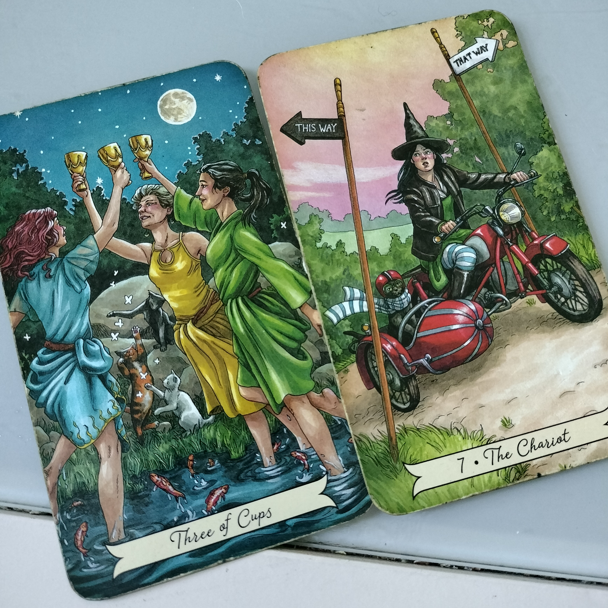

Latoya Hall
"The Meaning of Life is to Create Our Own Reality"
HOBBIES
There are so many fun things that I love to do, but my favorite are listed below! :]

- Hiking
- Tarot and Metaphysical Studies
- Difficult Baking Projects